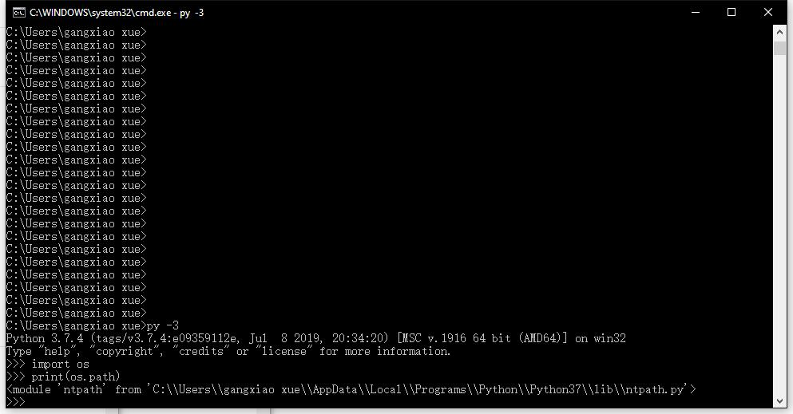
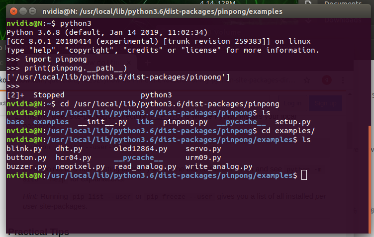

1. 安装pinpong¶
1.1. Windows平台安装¶
- Windows
1、安装python3, 注意安装最后一步勾选add to path，官网下载地址： 点击打开

2、win+R快捷键，输入cmd

3、小黑窗中输入pip install pinpong即可安装。

4、找到python库文件路径。运行python 3， import os, 可以把python库的路径打印出来。
5、打开任意一个文件夹，将路径复制进去，找到../site-packages/pinpong/examples,可以找到pinpong的示例程序。
1.2. Linux 平台安装¶
- Linux
1、终端中输入sudo pip install pinpong即可安装。
$ sudo pip install pinpong

2、找到python库的路径，最简单的方式，运行python3, import pinpong, 通过print(pinpong.__path__)打印出pinpong库的路径。
import pinpong
print(pinpong.__path__)
3、更改路径至pinpong的目录下的example中，可以看到示例程序都在这个文件夹。
1.3. Mac OS X 平台安装¶
- Mac OS X
1、启动用命令行，（打开任意finder窗口，键入Shift+Command+U）, 双击“终端”。 输入命令行，安装pinPong库
$ pip install pinpong


安装成功后，我们可以到pinpong的目录下，看一下示例代码。
2、找到python库的路径，最简单的方式，运行python, import system, 通过print(sys.path)打印出python库的路径。
3、更改路径至pinpong的目录下，
$ cd /..../python3.7/site-packages/pinpong
4、列出目录下的文件，ls,我们可以看到有个examples文件夹，示例代码就在这个文件夹中。
$ cd example
$ ls